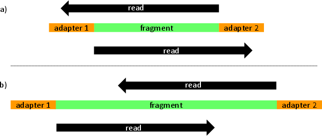

About
leeHom is a Bayesian maximum a posteriori algorithm for stripping sequencing adapters and merging overlapping portions of reads. Our algorithm is mostly aimed at ancient DNA and Illumina data but can be used for any dataset. As a caveat, leeHom uses heavily quality scores and requires them to be representative of error probabilities. For optimal performance, users can optionally enter a prior that models de probability of observing a specific insert size.
Citing
Our paper describing our algorithm was published in Nucleic Acids Research. To cite us:leeHom: adaptor trimming and merging for Illumina sequencing reads
Gabriel Renaud, Udo Stenzel and Janet Kelso
Nucleic Acids Res. 2014 Oct;42(18):e141. doi: 10.1093/nar/gku699.
Documentation
For installation, usage and other topics, please see the README in the software package.
Support or Contact
Please contact Gabriel Renaud (@grenaud) for further information: